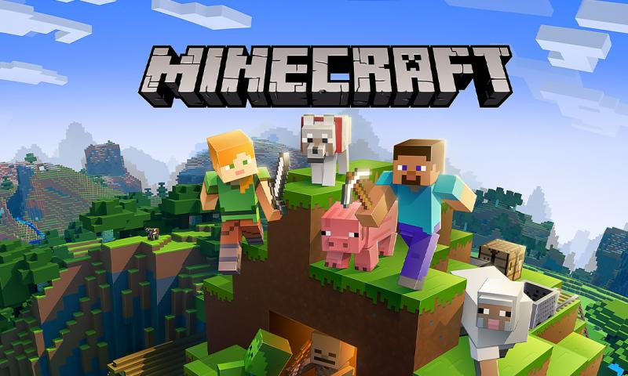

Grand Theft Auto v
Grand Theft Auto V (abreviado como GTA V) es un videojuego de acción-aventura de mundo abierto desarrollado por el estudio Rockstar North y distribuido por Rockstar Games.
Fue lanzado el 17 de septiembre de 2013 para las consolas PlayStation 3 y Xbox 360 Posteriormente, distribuido el 18 de noviembre de 2014 para las consolas de nueva generación
PlayStation 4 y Xbox One con mejores gráficos y novedades como la vista en primera persona, luego para Microsoft Windows el 14 de abril de 2015 y finalmente se confirmó
su lanzamiento para PlayStation 5 , Xbox Series X y Xbox Series S en la segunda mitad del 2021. Se trató del primer gran título en la serie Grand Theft Auto desde el lanzamiento
de Grand Theft Auto IV en 2008, el cual estrenó la era HD de la mencionada serie de videojuegos
Fuente: Wikipedia

Minecraft
Minecraft es un videojuego de construcción, de tipo «mundo abierto» o sandbox creado originalmente por el sueco Markus Persson (conocido comúnmente como "Notch"),
2 y posteriormente desarrollado por su empresa, Mojang Studios.Fue lanzado públicamente el 17 de mayo de 2009, después de diversos cambios fue lanzada su versión completa
el 18 de noviembre de 2011.
Markus Persson, el creador de Minecraft.
Un mes antes del lanzamiento de su versión completa, el 18 de octubre de 2011, fue estrenada una versión
para Android, y el 17 de noviembre del mismo año fue lanzada la versión para iOS. El 9 de mayo de 2012 fue lanzada la versión del juego para Xbox 360 y PS3. Todas las versiones
de Minecraft reciben actualizaciones constantes desde su lanzamiento. El 11 de noviembre de 2014, Minecraft lanzó su edición para el apartado de PlayStation Vita, desarrollada por
Mojang y 4J Studios, esta versión presenta las mismas actualizaciones y similares características que las otras versiones de consola; además, cuenta con el sistema de venta cruzada,
es decir que al comprar la versión de PlayStation 3 se adquiere también la de PlayStation Vita. A septiembre de 2014 se habían vendido más de 54 millones de copias.
Fuente: Wikipedia
God Of War
God of War es un videojuego de acción-aventura desarrollado por SCE Santa Monica Studio y publicado por Sony Interactive Entertainment. Su lanzamiento se produjo
el 20 de abril de 2018, en exclusiva para la consola PlayStation 4.1 Se trata de la octava entrega de la serie de God of War, cronológicamente, y la secuela de God of War III.
La historia se centra en la mitología nórdica y Kratos regresa como el protagonista principal.
Fuente: Wikipedia
League Of Legends
League of Legends (también conocido por sus siglas LoL) es un videojuego del género multijugador de arena de batalla en línea (MOBA) y deporte electrónico el cual fue
desarrollado por Riot Games para Microsoft Windows y OS X y para consolas digitales. En un principio los servidores estaban alojados en la empresa GOA y fue vendida
a la empresa china Tencent Holdings Limited.
El juego fue diseñado para el sistema operativo Microsoft Windows y lanzaron una beta para OS X, dejando al poco tiempo el proyecto
de lado. Esta beta ha sido mejorada por parte de usuarios del juego, haciendo posible jugar a una versión actualizada de League of Legends.
Fuente: Wikipedia

Crash Bandicoot 4
Crash Bandicoot 4: It's About Time (en español Crash Bandicoot 4: Ya era hora) es un videojuego de plataformas, diseñado por Toys for Bob y publicado por Activision.
El videojuego es la octava entrega de la serie Crash Bandicoot, secuela de Crash Bandicoot N. Sane Trilogy y que toma lugar después de los eventos de Crash
Bandicoot 3: Warped. La historia del juego sigue a Crash Bandicoot y su hermana Coco, ayudados por su antiguo enemigo Dingodile y una contraparte de una dimensión
alternativa de la antigua novia de Crash, Tawna, mientras recuperan las todopoderosas máscaras cuánticas en un intento por prevenir al Doctor Neo Cortex y
al Doctor Nefarious Tropy. de esclavizar el multiverso.
Crash Bandicoot 4: It's About Time se lanzó para PlayStation 4 y Xbox One el 2 de octubre de 2020,5 y las versiones
para PlayStation 5, Xbox Series X y Series S y Nintendo Switch se lanzarán el 12 de marzo de 2021.
Fuente: Wikipedia

Call Of Duty
Call of Duty: Modern Warfare es un videojuego de disparos en primera persona desarrollado por Infinity Ward y publicado por Activision. Es el decimosexto juego de
la saga Call of Duty y es un reboot de la serie Modern Warfare.123 Fue lanzado el 25 de octubre de 2019.
El juego se ambienta en un entorno realista y moderno.
Por primera vez en la historia de la franquicia, Call of Duty: Modern Warfare fue compatible con el modo multijugador multiplataforma. Activision también ha confirmado que el
pase de temporada tradicional de la franquicia ha sido desechado, lo que permite a la compañía distribuir contenido gratuito después del lanzamiento a todos los jugadores.
Fuente: Wikipedia